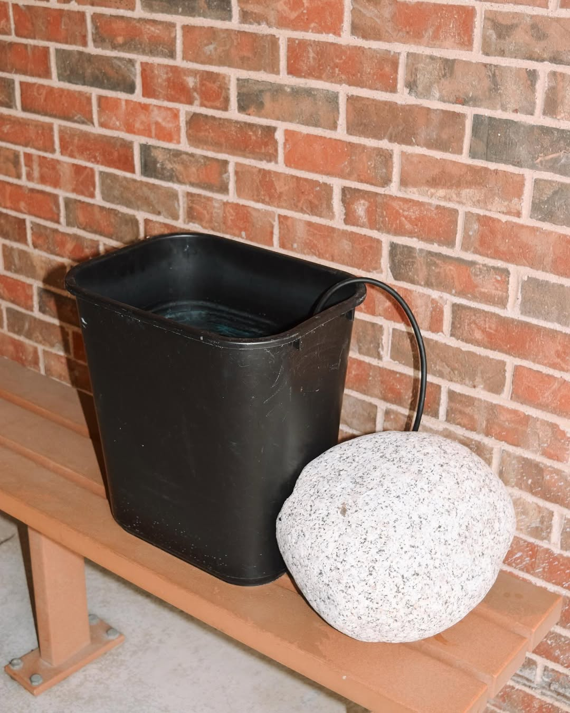
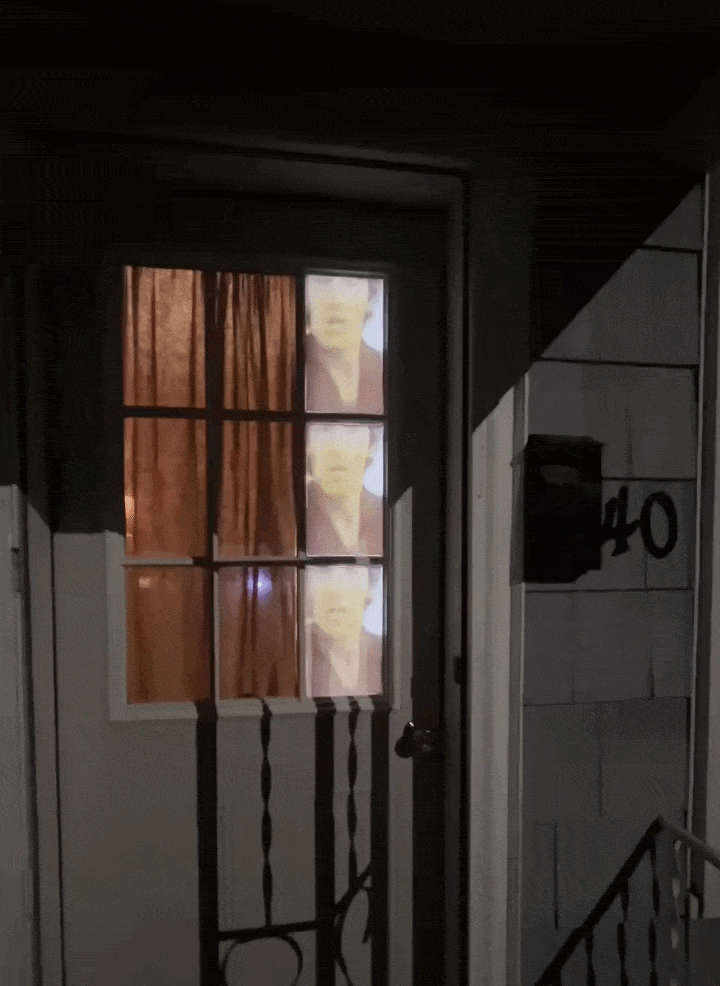
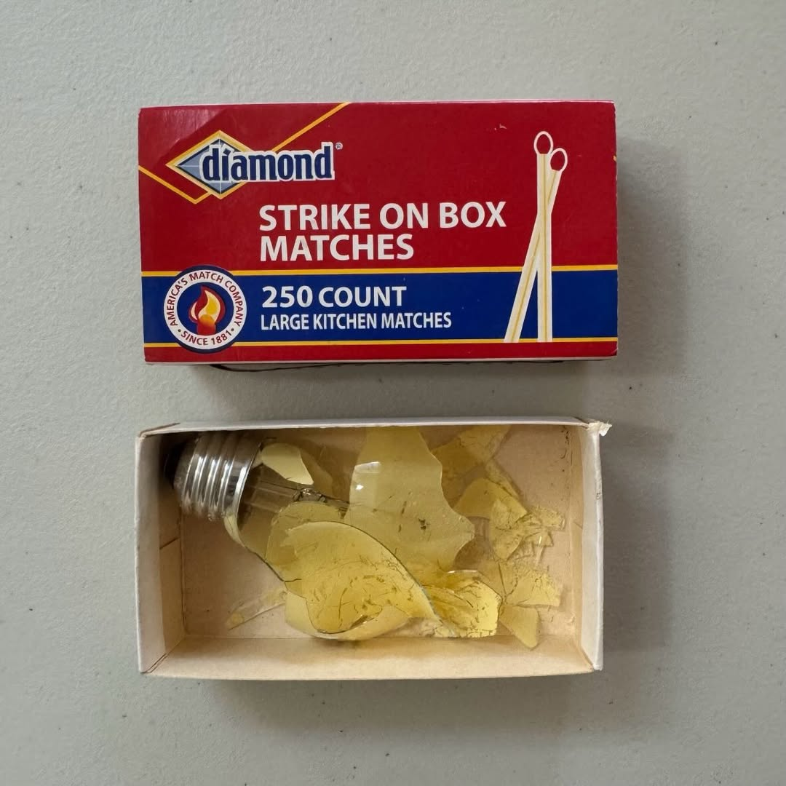
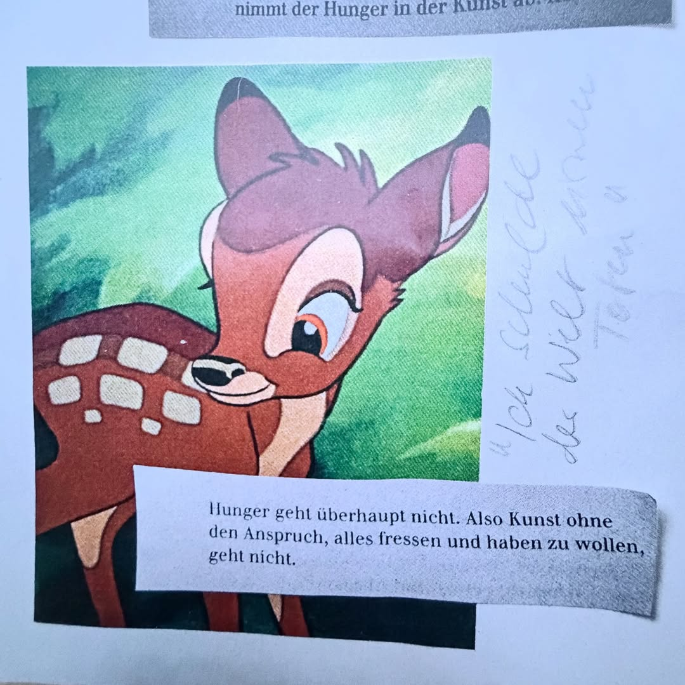
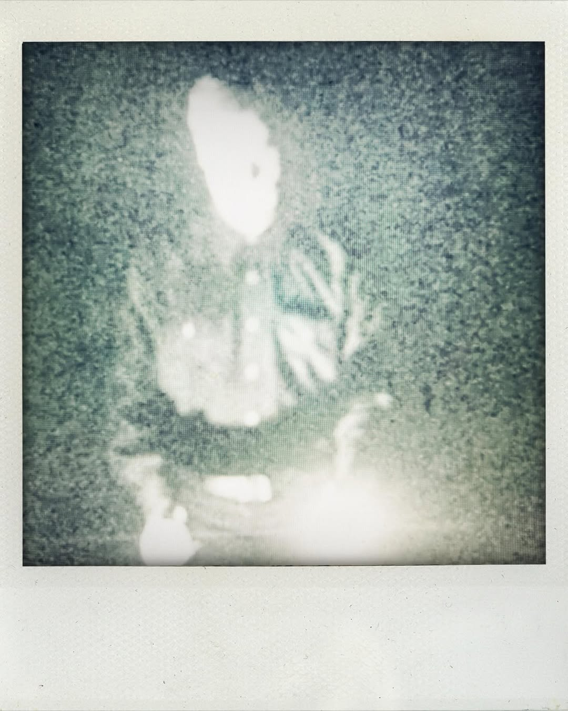
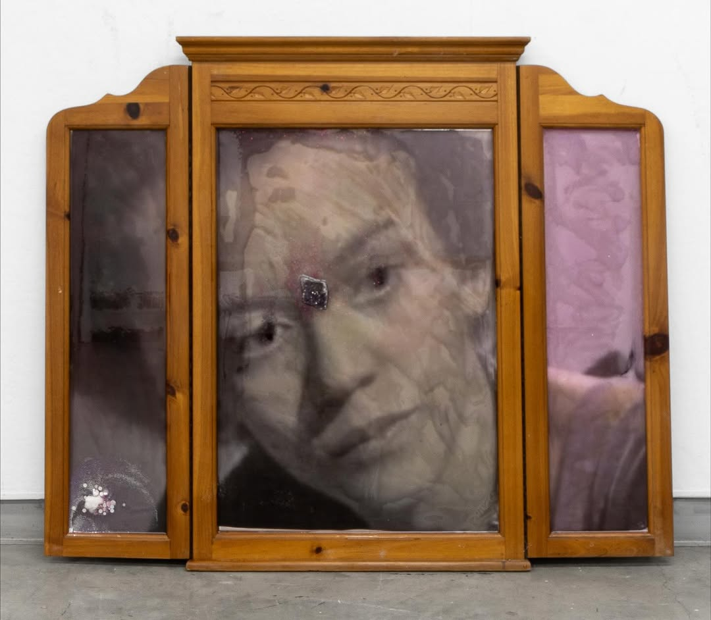

I. THE HOT GLUE CREW AT THE COURT

Accidental Assemblage.OK, I know I said there was no order to this listing, buuuuuut I might have a few favorites.
Students at TCC South accidentally created this insane assemblage and it's already the highlight of my year!!
It's a perfect example of the kind beauty that can be found when one stops looking for it.
Led by Professor Audrey Travis, The Hot Glue Crew is a sculpture collective formed through the Sculpture course at Tarrant County College's South Campus. The work was part of a larger student show, Assemblage: Between Earth & Sky, curated by Casey Leone.
The show itself is fine, but I must admit, I was rather disappointed that the other works on view lacked the level of kineticsim and simplicity this piece seems to possess -- some of the other works felt unresolved, more akin to studies or
experiments than finished works (which may very well be the intent). But this one, I like. There's a certain ominous quality to it as both a still life and an abstraction of the absurdity of life -- like I said, beauty often
resides where it is no longer being sought.
Instagram
II. BRUCE SPRINGSTEEN ON A DOOR AT NIGHT

Projection video of Bruce Springsteen on a door at night.I mean, what is there to say about this piece by Michael Higgins beyond that it just works?
A surreal mix of nostalgia and memory and the absurdism of patriotism as a spectacle embedded within Springsteen's own work — works as a proxy for the American Dream, and the way it is both a promise and a lie.
There's a certain sense of unease in such a domestic setting, yet the familiarity of the subject matter and setting makes the work all the more inviting for the viewer to process.
This piece works so much better in tandem with the music (watch it on the gram) — and ooooooh boy,
Dancing in The Dark was definitely a cheeky song choice, gotta love an artist who isn't above committing to irony!!
Real, accessible, and thought-provoking art. King shit.
Instagram
III. MICHAEL WYNNE - KITCHEN STILL-LIFE

Michael Wynne — “Kitchen Still-Life” (4/3/26) Broken Yellow Lightbulb in a Matchbox (Collection The Carter and Wynne Revocable Trust) (CR-2026.04.03-06)This work by Michael Wynne is a small with surprisingly big ideas. On one hand, there’s the spark — a match, quick and fleeting, like a thought just arriving. On the other, there’s the bulb, glowing steadily, the spark made real, captured, and controlled.
It’s a clever meditation on the shift from primitive to modern, from fire to electricity,
from instinct to design. Something raw and elemental meets something engineered and abstracted,
and the tension between the two is where the piece really lands.
Instagram
IV. MARIA KOCH - BAMBI

Translation: “Hunger doesn’t work at all. So art without the urge to consume and want to have everything doesn’t work.”Alright, I'm cheating a bit, as this is technically not a traditional artwork, but rather a conceptual exploration of fashion and identity. But heyyyyyy, this is my show, so I'm gonna include it anyway!!
For the ZEIT literature special, DIE ZEIT invited a range of creatives
including Wes Anderson, Ocean Vuong, and Werner Herzog -- to share pages from their sketchbooks.
Maria Koch,
creative director of 032c Readytowear, revealed the original design ideas for the “Bambi”
coat from this autumn/winter collection. I'd tell ya more but my German is pretty much non-existent lol.
Instagram
V. 1.618 AT THE SCHINKEL PAVILLON
Stumbled upon this incredible performance, brought to life by the impossibly gifted piano virtuoso Precious Renée Tucker -- if you haven’t seen her play, consider it your cultural obligation today. That said, the true anchor of the piece is the improvisational force of Josh Johnson.
Not exactly dance, not exactly theater -- this work exists in that liminal space between performance and installation. Johnson moves through the environment with gestures that are equal parts deliberate and unhinged, guiding the audience through an immersive experience that bends time, space, and expectation. Let’s be honest: the work is bro just going stupid atop a steel table -- but does your table come with built-in pyrotechnics or a live set by Tapiwa Svosve and Precious Renée Tucker!? Didn’t think so. And seriously, don’t even think about just looking at this muted image — the audio is everything here. Without it, the magic just doesn’t register. This is required watching, OK?
The piece also riffs on the classical concept of the golden ratio, using it as both structure and ideology. It considers the figure in historical, contemporary, and self-referential contexts, tracing how proportion shapes perception across audience, architecture, and surrounding space. Elegant, chaotic, perfectly calibrated -- all at once, but you absolutely need the sound to feel it.
Performance:Josh Johnson
Artwork:Josh Johnson, Enes Güç & Thilo Garus
Live-Set: Tapiwa Svosve & Precious Renée Tucker
Instagram
VI. ROBERT WILSON - EINSTEIN ON THE BEACH (1976)

Robert Wilson performing the flashlight dance. “Einstein on the Beach” (1976)OK, so I actually swiped this image from Hilton Als (one of my favorite accounts on the gram) -- which is actually where I first heard of Robert Wilson -- and no lie, I’m obsessed now.
This shot from Einstein on the Beach shows him doing the “flashlight dance,” and it’s wild how much drama comes from so little. A flashlight, a body, a blur of movement, and suddenly we've maturated from performance into an entire visual language.
The subject's face is almost erased, the body abstracted, and the whole thing feels more like a ritual than theater. It’s about light, repetition, and perception instead of narrative or emotion, which makes it feel completely hypnotic.
Honestly, it’s one of those moments that makes you rethink what performance can be.
Instagram
VII. ONAJEVWE - GIOVANNI (2025)

Giovanni, (2025) - Resin, Amethyst, Glitter, Frosted Mylar on Found woodIf there's anything that can be said about my own taste in art, it's that I have a soft spot for work that is rooted in found objects and material memory. Onajevwe's work is a masterclass in this approach, using materials that are both familiar and imbued with personal and cultural significance.
When an artist can hijack (for lack of a better term) a visual language through a lens of familiarity that is when initmate feelings of nostalgia and memory can be evoked, and this particular piece does so with skill and nuance.
Even the choice wood paneling takes me back to memories of my chilldhood -- feelings of saftey, familial attachment, legacy fill my mind.
There's a certain religious subtext here that I can't quite put my finger on, but she navigates a tension between the natural and the domestic, and the commercial, embedding images of Black life as gestures of memory and presence.
This piece is a meditation on the way we carry our histories with us, and how those histories are both personal and collective.
It’s a beautiful example of how art can be a vessel for memory, identity, and cultural commentary all at once.
Instagram